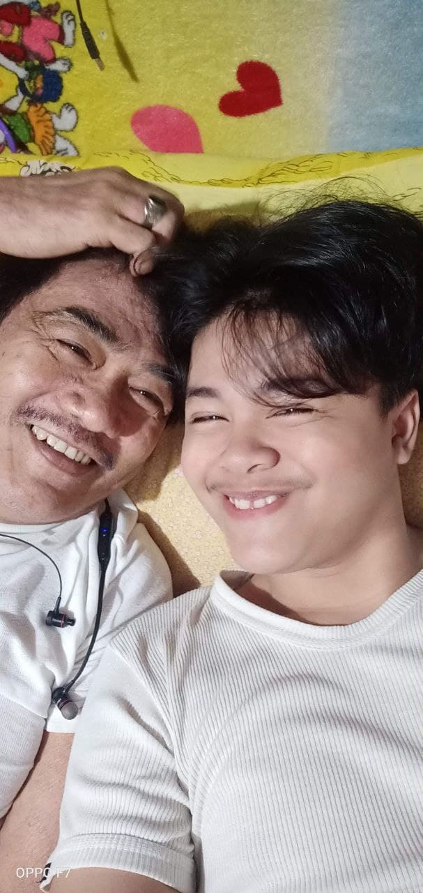
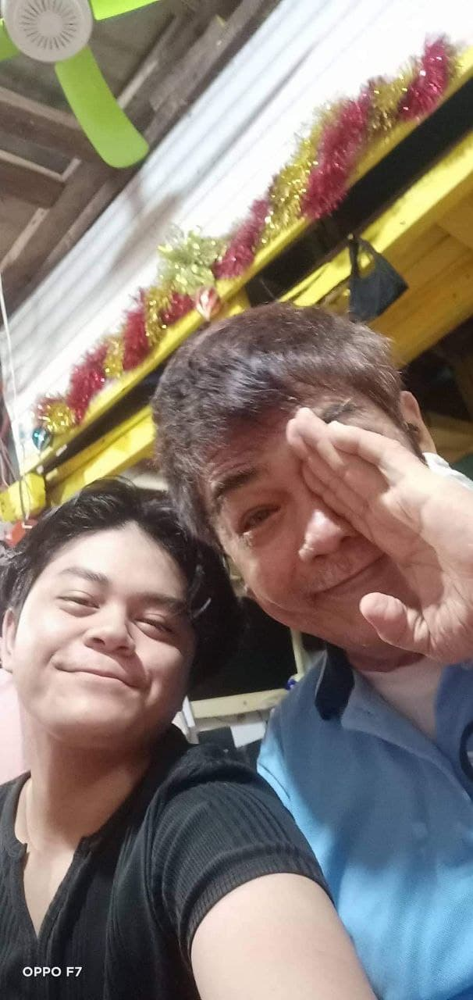

These two picture we're the most unforgettable for me because it is the last pictures taken with my father before he he left us.
i still remember when he said that he will let us be with my mom when i turned 18, but even before i turned to 18, he already left us.
I miss him so much, and for me he is one of the best persons i would never forget, not only because he is my father but because he taught
me so many things about life.